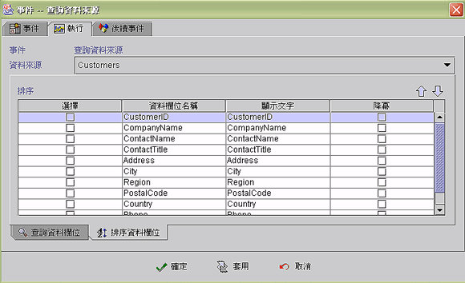

|
查詢欄位屬性設定 (query field properties) 隱含固定條件的查詢 (imply query criterion) 事件執行狀態與訊息 (event runtime status and message)
設計師可依需求，客製化 (customer) 預設的查詢視窗模組，選取允許使用者查詢的欄位，修改欄位的顯示標題內容，給定預設的查詢條件，限制查詢的結果，隱含固定條件的查詢及排序等 。執行時若按下查詢鍵 加上 CTRL 鍵，系統會在執行查詢前先顯示 SQL 命令，以利設計師除錯。
查詢欄位屬性設定 (query field properties)
雙擊 (double clicked) 內含值 (dataIn) 之後，會出現一個可以設定多個資料輸入的對話盒，供 其中之一(one of) 使用。輸入的資料必須為常數 (constant) ，不可使用運算式 (formula)。

隱含固定條件的查詢 (imply query criterion)
使用預設資料來源查詢視窗模組，提供使用者查詢介面，有些欄位須加入於查詢條件，但不希望使用者修改其值時，設計師須核取 (checked)【設定】，取消核取 (unchecked)【顯示】，並將隱含條件資料值輸入，使用者在查詢時，該欄位不會出現在查詢條件視窗中，但系統會將其加入於使用者查詢的 SQL 指令中。輸入的隱含查詢條件資料 (data)，若是常數值 (constant) 則直接鍵入資料 (字串不需加引號) ，若是使用運算式(formula)，則需在運算式外層加上 @Formula()。例如：某業務員登入系統後，其編號已存入 SysHash("usercode") 中，當該業務員在查詢客戶資料時，被限制為只能查詢顯示自己的客戶，此時設計師可在業務員編號(ex:Sales_Code) 的欄位，核取【設定】，取消核取【顯示】，【運算】選"等於"，【值1 】(data1) 內容為 @Formula(SysHashGet("usercode"))運算式。
事件執行狀態與訊息 (event runtime status and message)
EvStatus("事件名稱") ：取得事件執行狀態。
EvStatus("事件名稱.error") ：取得事件執行錯誤代碼。
EvStatus("事件名稱.INFO_STRING") ：取得事件執行 INFO_STRING 的訊息。
Copyright © 2001~ 2004 Probe Technology Inc. . All Rights Reserved. Questions, comments, and suggestions to Service@probe.com.tw |